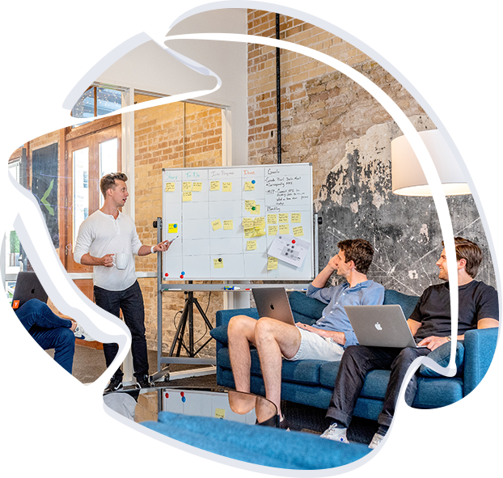

Python Completo
53 moduli da zero a Data Analysis: Python, OOP, NumPy, Pandas, grafici, SQL, KPI, AI e progetto finale.
Scopri il corso →Creo Soluzioni Digitali & Corsi di Programmazione. Un approccio pratico per imparare a sviluppare applicazioni, API, database e soluzioni web moderne.

Dai linguaggi fondamentali ai framework moderni: percorsi pratici per sviluppare applicazioni, API, database e progetti reali.
 Python & DataPython, programmazione a oggetti, analisi dati con Pandas e progetti pratici.Apri il corso
Tkinter & CustomTkinterCrea interfacce desktop, widget riutilizzabili e applicazioni complete con Python.Apri il corso
Python & DataPython, programmazione a oggetti, analisi dati con Pandas e progetti pratici.Apri il corso
Tkinter & CustomTkinterCrea interfacce desktop, widget riutilizzabili e applicazioni complete con Python.Apri il corso
 TypeScriptTipi, interfacce, generics e applicazioni web moderne con codice più affidabile.Esplora i corsi
TypeScriptTipi, interfacce, generics e applicazioni web moderne con codice più affidabile.Esplora i corsi
 SQL Server & DatabaseQuery, JOIN, progettazione dati, procedure, sicurezza e prestazioni con T-SQL.Apri il corso
SQL Server & DatabaseQuery, JOIN, progettazione dati, procedure, sicurezza e prestazioni con T-SQL.Apri il corso
 C# & .NETProgrammazione a oggetti, LINQ, API e applicazioni nell'ecosistema Microsoft.Esplora i corsi
ASP.NET CoreProgetta API REST, servizi backend, autenticazione e applicazioni con .NET.Esplora i corsi
C# & .NETProgrammazione a oggetti, LINQ, API e applicazioni nell'ecosistema Microsoft.Esplora i corsi
ASP.NET CoreProgetta API REST, servizi backend, autenticazione e applicazioni con .NET.Esplora i corsi
 BlazorRealizza applicazioni web con componenti riutilizzabili, servizi e C#.Esplora i corsi
.NET MAUISviluppa applicazioni desktop e mobile multipiattaforma con C# e .NET.Esplora i corsi
BlazorRealizza applicazioni web con componenti riutilizzabili, servizi e C#.Esplora i corsi
.NET MAUISviluppa applicazioni desktop e mobile multipiattaforma con C# e .NET.Esplora i corsi
 PHP Full StackBackend, database, API, autenticazione e applicazioni web complete.Esplora i corsi
PHP Full StackBackend, database, API, autenticazione e applicazioni web complete.Esplora i corsi
 Linguaggio CFondamenti, puntatori, strutture dati e gestione della memoria.Esplora i corsi
Linguaggio CFondamenti, puntatori, strutture dati e gestione della memoria.Esplora i corsi
 C++OOP, STL, template, gestione risorse e tecniche del C++ moderno.Esplora i corsi
C++OOP, STL, template, gestione risorse e tecniche del C++ moderno.Esplora i corsi
 JavaClassi, collections, eccezioni, concorrenza e sviluppo di applicazioni.Esplora i corsi
JavaClassi, collections, eccezioni, concorrenza e sviluppo di applicazioni.Esplora i corsi
 GoServizi web, API, goroutine e concorrenza con un linguaggio essenziale.Esplora i corsi
GoServizi web, API, goroutine e concorrenza con un linguaggio essenziale.Esplora i corsi
 RustOwnership, borrowing, sicurezza della memoria e applicazioni efficienti.Esplora i corsi
RustOwnership, borrowing, sicurezza della memoria e applicazioni efficienti.Esplora i corsi
 KotlinNull safety, coroutines e sviluppo moderno con l'ecosistema JVM.Esplora i corsi
KotlinNull safety, coroutines e sviluppo moderno con l'ecosistema JVM.Esplora i corsi
 SwiftTipi, protocolli e programmazione asincrona per app nell'ecosistema Apple.Esplora i corsi
SwiftTipi, protocolli e programmazione asincrona per app nell'ecosistema Apple.Esplora i corsi
Materiale progressivo, esercizi e progetti per trasformare la teoria in competenze realmente utilizzabili.
53 moduli da zero a Data Analysis: Python, OOP, NumPy, Pandas, grafici, SQL, KPI, AI e progetto finale.
Scopri il corso →Impara a creare applicazioni desktop Python moderne partendo da zero.
Scopri il corso →Corso completo da zero a professionista: T-SQL, SELECT, JOIN, GROUP BY, CTE, procedure, funzioni, trigger, transazioni, sicurezza, performance ed esercizi.
Scopri il corso →Programmazione moderna con C#, OOP e framework .NET.
Vai ai corsi →API professionali, servizi, database e architetture backend.
Vai ai corsi →Applicazioni web e multipiattaforma nell'ecosistema .NET.
Vai ai corsi →Sono Moussa Salisou, sviluppatore backend e frontend e docente di programmazione. Lavoro con tecnologie Microsoft e web, database e sviluppo di applicazioni per desktop, mobile e web.
Il mio obiettivo è trasformare concetti tecnici complessi in percorsi chiari, pratici e progressivi, costruendo insieme progetti che permettano di imparare facendo.
Parliamo del percorso più adatto alle tue esigenze.